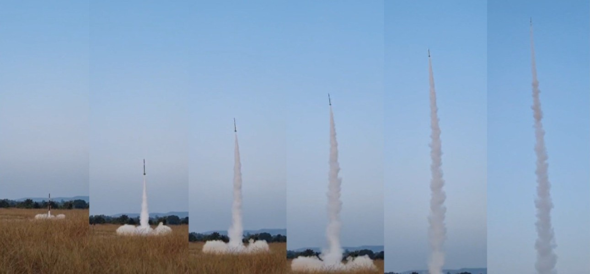
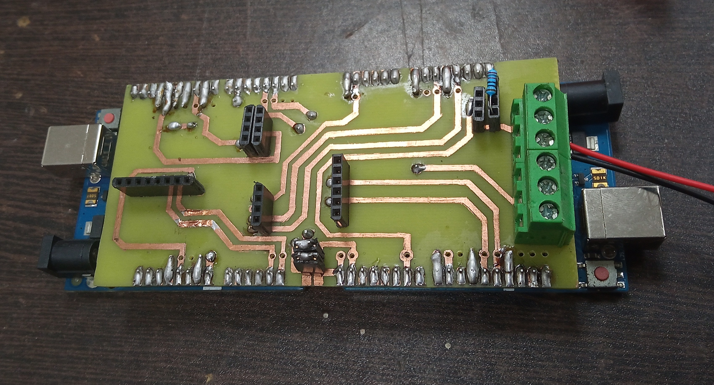
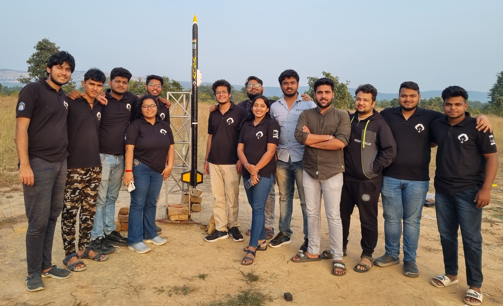

VSSUT Satellite Launch Vehicle: An MoU with ISRO
A Summary of Experience and Excellence!!
The development of indigenous space technology and the promotion of early research in aerospace engineering have been important objectives of the collaboration between academic institutions and national space agencies. With this vision, Veer Surendra Sai University of Technology (VSSUT), Burla, entered into a Memorandum of Understanding (MoU) with the Indian Space Research Organisation (ISRO) to establish the VSSUT Student Launch Vehicle (VSLV) programme. The initiative aimed to motivate undergraduate students to pursue early careers in space science and technology through practical exposure to rocket design, development, testing, and launch operations.
The VSSUT Space Science and Innovation Club (VSSSIC), a student-led technical society, played a central role in coordinating the programme under the guidance of faculty members and scientists. Initiated in 2017, the project brought together students from different engineering disciplines to develop a functional sounding rocket capable of carrying scientific payloads. Since its inception, multiple generations of the vehicle have been designed, tested, and improved, with Chromakrut representing the fifth generation of the VSLV programme, developed by the graduating batch of 2024.
The broader mission vision extended beyond developing a student rocket. Sounding rockets provide an economical platform for atmospheric meteorological measurements, environmental monitoring, and geographical studies. Potential applications included atmospheric data collection and LiDAR-based terrain mapping. One of the initial proposals involved mapping the Hirakud Dam reservoir to investigate sediment accumulation (siltation) and changes in reservoir geography over time. However, before undertaking such scientific missions, it was essential to develop and validate a reliable sounding rocket capable of carrying and recovering scientific payloads.
Avionics and Flight Computer Development
The avionics subsystem was developed by me, along with my teammates Vivek Goel and Subhranshu Ranjan Das. The primary objective was to develop an independent flight computer capable of monitoring the rocket's flight, transmitting telemetry, recording onboard measurements, and executing the recovery sequence.
A dual-microcontroller architecture was implemented using two Arduino Uno boards. Rather than assigning all computational and communication responsibilities to a single controller, the system was divided into two functional segments. Both microcontrollers communicated through a UART serial interface.
The first Arduino Uno was dedicated to telemetry and real-time flight monitoring. It interfaced with an MPU6050 inertial measurement unit to acquire acceleration and angular velocity data, while a BMP180 barometric pressure sensor provided atmospheric pressure and altitude measurements. The collected sensor information was transmitted continuously to the Ground Control Station through an NRF wireless communication module. An externally mounted antenna provided the communication link between the airborne system and the ground station.
The second Arduino Uno was responsible for onboard data logging and recovery operations. Sensor measurements, particularly the BMP180 altitude data, were stored using an SD card module for post-flight analysis. The controller also monitored the flight progression and executed the programmed recovery sequence upon detecting the apogee condition. This segmented architecture provided functional separation between telemetry and recovery operations, improving the organisation and reliability of the onboard electronics.
Telemetry Antenna Design and Development
Reliable wireless communication during flight was essential for monitoring the rocket's altitude, orientation, and operational status. To improve the telemetry link, a customised Yagi–Uda antenna was designed and developed by Subhranshu Ranjan Das and Ananya Anuska.
The antenna was modelled and simulated using CST Studio Suite, with the design optimised for operation with the NRF telemetry module. The Yagi–Uda configuration consists of a driven element, reflector, and multiple directors mounted along a supporting boom. The parasitic elements modify the radiation pattern, providing directional gain towards the intended communication region. Following electromagnetic simulation, the antenna was fabricated and tested with the NRF module to evaluate its communication performance. Its integration into the rocket provided an externally mounted antenna arrangement for telemetry transmission during flight.
Structural Design and Mechanical Development
The structural assembly primarily consisted of three major components: the cylindrical fuselage, nose cone, and motor housing. These components were developed to provide mechanical integrity, aerodynamic stability, and adequate space for the payload and avionics.
The fuselage was designed as a cylindrical body with a uniform diameter, determined by the dimensions of the payload, avionics, and propulsion assembly. PVC was selected as the primary structural material. The external surface was subsequently treated with putty and epoxy resin to obtain a smoother finish and improve surface protection. The nose cone was designed using SolidWorks and evaluated through ANSYS simulations to investigate its aerodynamic stability and drag characteristics. Based on the simulation results, the final geometry was selected and fabricated using wood.
The propulsion assembly was housed within a dedicated stainless-steel motor enclosure, separated from the remaining fuselage using a solid nylon coupler block. An internal insulating layer provided thermal protection to the surrounding structure. Three trapezoidal fins were mounted around the motor housing to improve aerodynamic stability during flight. The structural subsystem was developed by Subhankar Panda, Animesh Mohanty, and Suvham Nayak.
Motor Case and Thruster Nozzle Development
The propulsion assembly was one of the most technically demanding components of Chromakrut. The motor case was fabricated using stainless steel to withstand the elevated temperatures and internal pressures associated with solid-propellant combustion.
Its structural design was evaluated using ANSYS simulations to assess the mechanical response under the expected operating conditions. The motor case served as the combustion chamber, accommodating the laboratory-developed propellant grains. The thruster nozzle was another critical component because it governs the conversion of high-pressure combustion gases into directed exhaust flow. Its development involved initial analytical formulation followed by CAD modelling and simulation to evaluate the nozzle geometry and expected propulsion performance. The motor case and nozzle development were primarily undertaken by Animesh Mohanty.
Solid Propellant Development and Characterisation
The solid propellant was another critical aspect of the VSLV programme. Different propellant systems based on fuel and oxidiser combinations were investigated to evaluate their combustion characteristics and expected thrust performance. The development involved laboratory-scale characterisation, with experimental observations compared against theoretical predictions and simulation results. Particular attention was given to combustion behaviour, consistency, and the expected performance of the propulsion system.
Following the validation process, the selected propellant configuration was prepared for integration into the motor assembly under controlled laboratory procedures. The internal grain geometry was also considered an important design parameter because it influences the exposed burning surface and consequently the thrust-time characteristics of the motor. The propulsion subsystem was subsequently evaluated through static testing before being considered for flight integration.
Static Testing and Thrust Measurement
Before attempting a full rocket launch, the propulsion system was evaluated through a static motor test. The primary objective was to experimentally measure the thrust generated by the motor and compare its performance with the predicted values. A dedicated static test stand was collectively designed and developed by the team. The structure was mechanically reinforced, with the motor assembly securely mounted and the test stand anchored to the ground to withstand the forces generated during operation.


A calibrated strain-gauge-based measurement arrangement was incorporated to record the reaction force generated during motor operation. The acquired measurements provided the thrust-time response, which could subsequently be used to estimate important propulsion parameters. A dedicated remote ignition and monitoring arrangement was also developed. The system incorporated a control unit with supply, timing, and ignition functions, alongside a separate remotely operated triggering unit. Wireless NRF communication was incorporated to facilitate remote operation. Static testing provided an essential validation stage before the complete propulsion assembly was integrated into the rocket.
Recovery System and Full-Body Recovery
The recovery subsystem was independently developed by Mohit Agarwal. Unlike conventional sounding rocket recovery arrangements that commonly employ direct ejection mechanisms, Chromakrut incorporated a piston-based deployment system to eject the nose cone and deploy the parachute. The mechanism consisted of a piston assembly housed within the upper section of the rocket, immediately below the nose cone and separated from the avionics bay. The piston was supported by nylon structural blocks and designed to provide sufficient mechanical force for nose-cone separation.
During flight, the onboard flight computer continuously monitored the altitude data. Upon detecting the apogee condition, it initiated the programmed recovery sequence. The resulting deployment impulse actuated the piston mechanism, separating the nose cone and releasing the parachute. This arrangement was intended to achieve controlled recovery of the complete rocket body while protecting the onboard electronics and structural components during descent.
System Integration and Pre-Launch Verificationt
Since the different subsystems were developed independently by separate teams, integrating them into a single functional vehicle was an important part of the project. My responsibility also involved coordinating the progress of individual divisions, monitoring subsystem compatibility, and minimising integration errors arising from communication gaps between teams. The final assembly was therefore carried out collectively. Particular attention was given to the interfaces between the motor housing, fuselage, avionics bay, telemetry antenna, and recovery mechanism.
Before launch, a comprehensive Go/No-Go assessment was performed. Each subsystem was examined according to its operational importance and the consequences of potential failure. The checks included structural integrity, avionics functionality, telemetry communication, onboard data logging, recovery-system readiness, and overall assembly condition. This process ensured that the final launch decision was based on the operational readiness of the integrated vehicle rather than the successful development of individual components alone.
Launch-Site Preparation and Flight Operations
Launch preparation involved considerably more than assembling and mounting the rocket. Weather conditions were monitored in advance, including wind velocity, wind direction, humidity, and cloud conditions. Regional activities and other potential disturbances were also considered while selecting the launch date. Once the date was finalised, the launch site was inspected and prepared. The launch structure was assembled, and the completed rocket was mounted in its designated position..
The avionics and telemetry team performed final communication and sensor checks, while the remaining team members verified the launch infrastructure and recovery arrangements. Environmental conditions at the launch site were documented before the flight. Multiple cameras were positioned at different locations and viewing angles to capture the launch, ascent, and recovery sequence. Once the final safety assessment was completed, the team moved to the designated safe distance based on the established launch-site safety procedures
As the launch captain, I was responsible for the final launch sequence. Following the completion of the Go/No-Go checks and confirmation of team readiness, the launch command was executed.
Mission Control, Telemetry and Post-Flight Data Analysis
During flight, the Ground Control Station received telemetry transmitted by the onboard NRF communication system. The transmitted measurements enabled real-time monitoring of altitude, acceleration, and orientation. The flight data was used to identify the major flight phases, including ignition, powered ascent, coasting, apogee, and recovery deployment. The ground station provided an immediate view of the vehicle's flight progression, allowing the team to monitor its behaviour throughout the mission.
Following recovery, the measurements stored on the onboard SD card were retrieved and compared with the live telemetry received at the ground station. This comparison helped identify communication losses, measurement noise, and discrepancies between the transmitted and locally recorded sensor data. In addition to the electronic measurements, the camera mounted on the rocket provided visual documentation of the flight. Combining telemetry, onboard data logging, and video recordings enabled a more comprehensive evaluation of the mission.

Project Gallery
